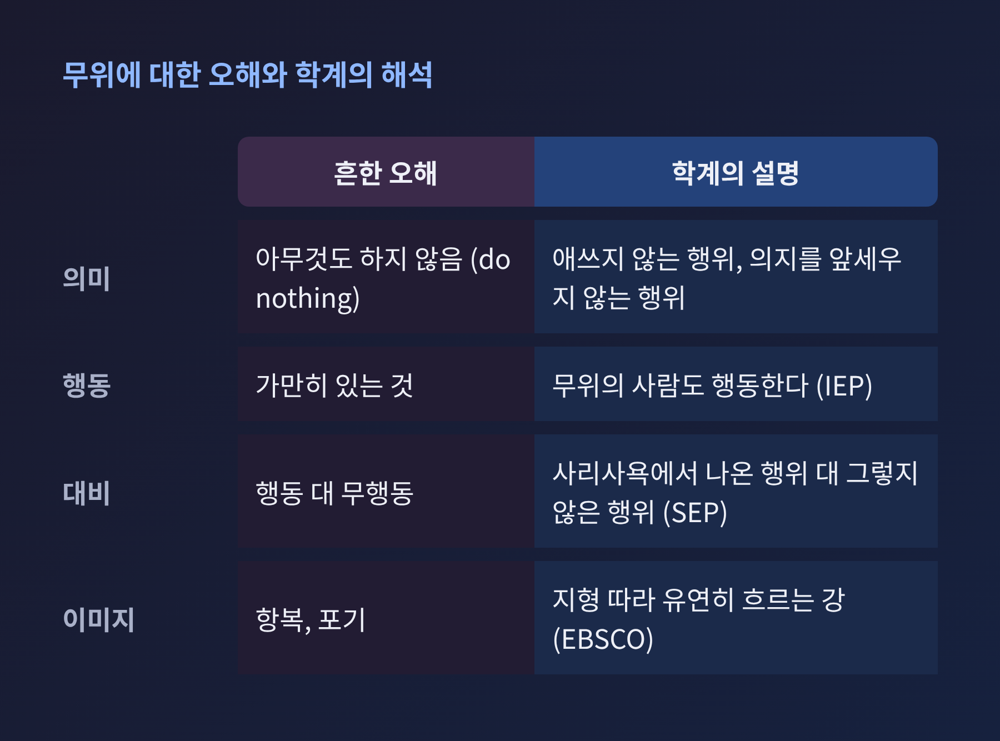
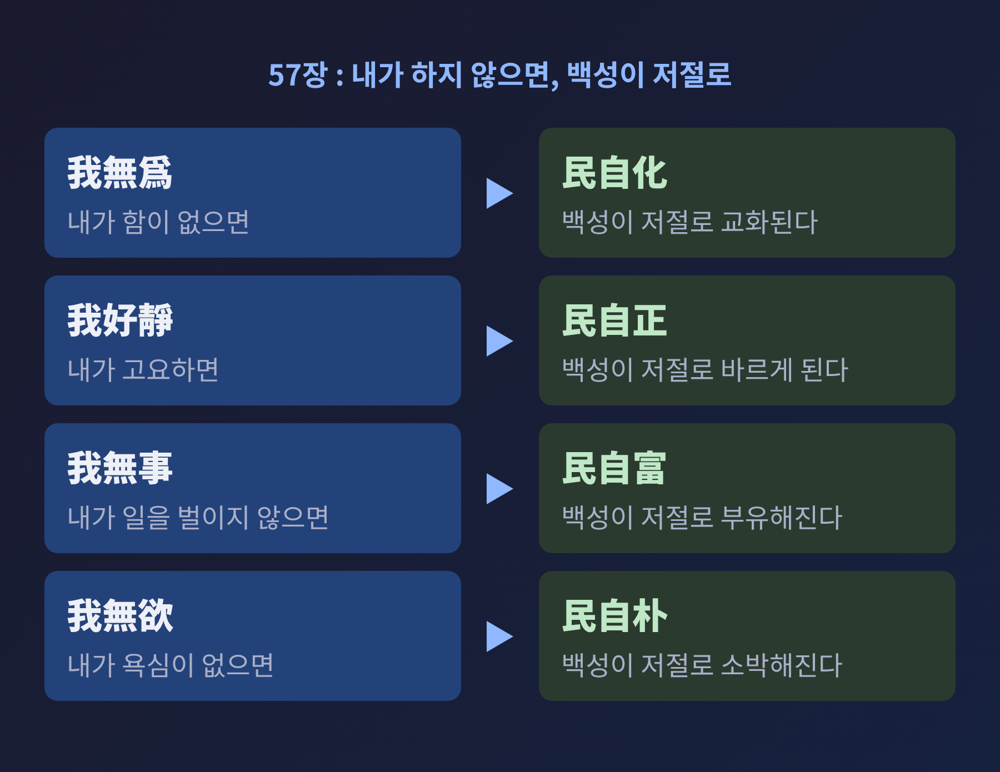
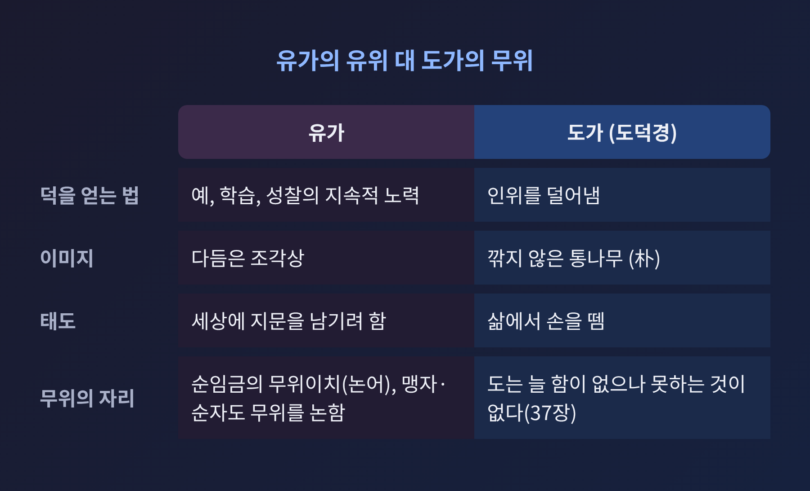

노자 무위와 자연, 아무것도 안 하는 게 아니라 억지로 하지 않는 다스림
오늘은 『도덕경』의 핵심어인 무위(無爲)와 자연(自然)에 대해 이야기해 보려 합니다.
무위는 흔히 '아무것도 하지 않음'으로 옮겨지지만, 학자들은 이 번역이 오해를 낳는다고 봅니다.
이 글에서는 무위가 '억지로 하지 않음'에 가깝다는 해석의 근거와, 물의 비유, 유가와의 대비, 그리고 오늘의 의미를 차례로 정리하겠습니다.
■ 무위는 정말 '아무것도 하지 않음'일까
무위는 글자 그대로 풀면 '함이 없음'입니다.
영어권에서는 non-action, inaction 같은 말로 옮겨 왔습니다.
그런데 스탠퍼드 철학 백과사전은 무위가 전면적인 무행동을 뜻하지 않는다고 설명합니다. 주로 사리사욕에서 비롯된 행위와 대비되는 개념이라는 것입니다. 인터넷 철학 백과사전(IEP)은 한 걸음 더 나아가 '무행동'이라는 번역을 아예 틀렸다고 봅니다. 무위를 실천하는 사람도 분명히 행동하기 때문입니다. 그래서 '애쓰지 않는 행위(effortless action)', '의지를 앞세우지 않는 행위(nonwillful action)' 같은 표현을 제안합니다.
언어학자 빅터 메어도 2009년 글에서 'do nothing'은 지나치게 문자적이라고 짚었습니다. 문법가들 사이에서도 이 말이 명령인지, 단순한 부정 진술인지 의견이 갈린다고 합니다.
EBSCO 연구 스타터는 비유를 하나 듭니다. 강이 땅 위를 흐르면서 지형에 따라 유연하게 방향을 바꾸는 모습입니다. 무위는 항복이 아니고, 계획하거나 능동적으로 사는 일을 막지도 않습니다.

무위를 이렇게 읽으면, 『도덕경』의 모순처럼 보이던 문장이 풀립니다. 37장의 "道常無爲而無不爲"는 도는 늘 함이 없는데 하지 못하는 것이 없다는 뜻입니다. D.C. 라우는 이를 "The Way never acts yet nothing is left undone"으로 옮겼습니다. 억지로 하지 않기에, 오히려 이루지 못하는 일이 없다는 말입니다.
■ 자연은 숲이 아니라 '스스로 그러함'입니다
『도덕경』의 자연(自然)은 오늘 우리가 말하는 산과 숲을 가리키지 않습니다.
SEP는 이 말을 '자연스러움, 자발성'으로 풀이합니다. 도가 작동하는 방식이고, 사물이 제 길을 따를 때의 모습이라는 것입니다. 자연계뿐 아니라 왕이나 가족 같은 사회 제도에도 적용되는 말입니다.
17장에 이 단어가 쓰인 대목이 있습니다.
"太上, 下知有之 … 功成事遂, 百姓皆謂我自然."
가장 좋은 통치자는 백성이 그가 있다는 사실 정도만 아는 존재라는 뜻입니다. 일이 이루어져도 백성은 "우리가 저절로 그리 되었다"고 말합니다. 통치자의 공이 드러나지 않는 것이 이상적이라는 이야기입니다. IEP도 이상적인 통치자를 눈에 띄지 않는 그림자 같은 존재로 설명합니다.
무위와 자연은 이렇게 짝을 이룹니다. 다스리는 쪽이 억지로 하지 않으면, 다스림을 받는 쪽이 스스로 그러하게 됩니다.
■ 노자가 그린 통치의 모습
SEP는 『도덕경』을 후기 주나라의 혼란에 대한 응답이자 지배층을 향한 글로 읽는 접근을 소개합니다. 책은 전쟁(30장), 가혹한 형벌(74장), 무거운 세금(75장)을 비판합니다.
57장은 가장 구체적입니다.
"我無爲而民自化, 我好靜而民自正, 我無事而民自富, 我無欲而民自朴."
내가 함이 없으면 백성이 저절로 교화되고, 내가 고요하면 저절로 바르게 되며, 내가 일을 벌이지 않으면 저절로 부유해지고, 내가 욕심이 없으면 저절로 소박해진다는 뜻입니다.

같은 장에는 날카로운 관찰도 있습니다. 금기가 많을수록 백성은 가난해지고, 법령이 번성할수록 도적이 많아진다는 구절입니다. 규제가 늘수록 문제가 줄어든다고 믿는 통치를 정면으로 의심하는 말입니다.
37장은 같은 생각을 "不欲以靜, 天下將自定"으로 요약합니다. 욕심내지 않고 고요하면 천하가 저절로 안정된다는 것입니다.
다만 이 대목을 읽는 방식은 하나가 아닙니다. 뒤에서 다시 다루겠습니다.
■ 상선약수, 물은 다투지 않고 낮은 곳에 머뭅니다
무위를 가장 쉽게 보여 주는 이미지가 8장의 물입니다.
"上善若水. 水善利萬物而不爭, 處衆人之所惡, 故幾於道."
가장 좋은 것은 물과 같다는 말입니다. 물은 만물을 이롭게 하면서도 다투지 않고, 사람들이 싫어하는 낮은 곳에 머물기에 도에 가깝다고 합니다.
신영복 선생은 2002년 프레시안 강독에서 물이 최고선인 이유를 세 가지로 정리했습니다. 만물을 이롭게 하고, 다투지 않고, 낮은 곳에 머문다는 것입니다. 그는 '부쟁(不爭)'을 도피나 굴복으로 읽지 않았습니다. 주어진 조건을 거스르며 억지로 밀어붙이지 않는 것이라고 풀었습니다. 낮은 곳도 지형만이 아니라 사회의 낮고 억눌린 자리를 가리킨다고 보았습니다.
8장은 이어서 물의 덕을 일곱 영역에 적용합니다. 거처, 마음, 사귐, 말, 다스림, 일, 움직임의 때입니다. 마지막 구절은 "夫唯不爭, 故無尤", 다투지 않으니 허물이 없다는 말입니다.
물은 78장에서도 다시 나옵니다. SEP는 이 물을 무위와 이어지는, 유연하지만 깊은 힘의 상징으로 설명합니다.
■ 유가의 유위와 무엇이 다른가
흔히 '유가는 유위, 도가는 무위'로 나누어 말합니다. 절반쯤 맞는 이야기입니다.
EBSCO에 따르면 유가는 예와 학습, 성찰 같은 지속적인 노력으로 내면의 선을 쌓는다고 보았습니다. 반면 도가는 무위가 선과 평온을 기르는 가장 효과적인 길이라 보았습니다. IEP는 이 차이를 이렇게 그립니다. 유가가 모든 것에 지문을 남기려 할 때, 도가는 삶에서 손을 뗀다는 것입니다. 다듬은 조각상과 깎지 않은 통나무의 대비이기도 합니다.
『도덕경』 38장에는 "上德不德, 是以有德"이 있습니다. 최고의 덕은 덕스러우려 하지 않으니 덕이 있다는 말입니다. SEP는 의도적으로 도덕을 기르려는 노력이 오히려 타고난 선함을 약하게 한다는 생각이 18장과 38장에 깔려 있다고 설명합니다.
흥미로운 판본 차이도 있습니다. 통행본 19장에는 "인(仁)을 끊고 의(義)를 버리라"는 구절이 있습니다. 그런데 곽점 초간 갑본의 해당 대목은 "꾸밈을 끊고 속임을 버리라"로 되어 있다고 SEP는 전합니다. 노자가 인의 자체를 부정했는지는 판본에 따라 다르게 읽힙니다.
여기서 유가를 단순한 '억지'로만 볼 수 없다는 점도 말씀드려야 합니다. 『논어』 위령공 편은 순임금을 두고 이렇게 말합니다.
"無爲而治者, 其舜也與."
함이 없이 다스린 이는 순임금일 것이라는 말입니다. 공자는 그가 몸을 공손히 하고 남쪽을 향해 앉아 있었을 뿐이라고 덧붙입니다. 무위이치(無爲而治)라는 표현은 도가의 전유물이 아닙니다. 위키피디아가 소개하는 슬링거랜드의 정리에 따르면 맹자는 억지로 하지 않을 때 덕이 저절로 실현된다고 보았고, 순자는 오랜 훈련을 거쳐야만 무위에 이른다고 보았습니다. 유가 안에도 무위의 이상이 있었던 셈입니다.

차이는 어디서 일어나는지에 있습니다. 유가에서 무위는 오랜 수양 끝에 도달하는 결과에 가깝습니다. 『도덕경』에서 무위는 인위를 덜어낼수록 가까워지는 방향입니다. 48장이 그렇게 말합니다.
■ 덜어냄의 철학, 그리고 해석의 갈림길
"爲學日益, 爲道日損. 損之又損, 以至於無爲. 無爲而無不爲."
학문은 날마다 더하고, 도는 날마다 덜어낸다는 구절입니다. 덜고 또 덜어 무위에 이르면 하지 못하는 일이 없다고 합니다. SEP는 도를 따르는 일을, 욕망이 쌓아 올린 꾸밈을 줄여 가는 꾸준한 과정으로 설명합니다.
그렇다면 이 가르침은 통치자를 위한 기술일까요, 약한 이들을 위한 철학일까요. 학계와 독자 사이에서 실제로 의견이 갈리는 대목입니다.
한 읽기는 『도덕경』을 군주의 통치술로 봅니다. IEP는 법가의 한비자가 이 책을 중국 통일의 지침으로 삼았다고 소개합니다. 같은 글은 이상적 통치자가 백성의 배를 채우고 욕심을 비우게 하며(3장), 백성이 많이 알지 못하게 한다(65장)는 구절도 전합니다. 통치술로 읽힐 여지가 충분한 대목입니다. 위키피디아는 법가 신불해의 무위가 군주가 신하의 직분에 간섭하지 않는 것이었다고 전합니다.
다른 읽기도 있습니다. 신영복 선생은 이 '제왕의 비밀 정치' 해석을 알고 있었지만 근본 입장으로는 받아들이지 않았습니다. 『도덕경』이 민중의 자리에서 권력 다툼과 기회주의적 지식인을 비판한다고 보았기 때문입니다. SEP도 정치적 해석은 자기 수양이라는 더 넓은 윤리적, 영적 틀 안에서 읽어야 한다고 경고합니다.
어느 쪽이 맞는지 이 글이 판정할 수는 없습니다. 다만 한 가지는 분명해 보입니다. 같은 텍스트가 군주의 도구로도, 약자의 지혜로도 읽혔다는 사실 자체가, 무위를 '그저 가만히 있기'로 단순화할 수 없다는 증거입니다.
■ 오늘 무위를 다시 읽는다면
예전에는 무위가 은둔자의 철학으로 소비되곤 했습니다. 지금은 일과 교육을 다루는 자리에서 다시 불러내집니다.
한국교육신문 2018년 기사에서 『도덕경』 완역본을 낸 김정봉 씨는 48장을 4차 산업혁명 시대 교육에 연결했습니다. 원리를 이해하면 그것을 받쳐 준 지식은 내려놓을 수 있다는 것입니다. 더하기만 하는 공부에서 벗어나, 분야를 가로지르는 통섭형 인재를 길러야 한다는 이야기로 이어집니다.
EBSCO는 지나치게 애쓰면 정신적 마비가 온다는 도가의 생각을 소개하며, 알아차림 속에서 자의식 과잉 없이 하는 숙련된 행동으로 무위를 설명합니다. 앨런 와츠의 표현으로는 '스스로의 길에서 비켜서기'입니다.
물론 한계도 있습니다. 무위를 방임의 면죄부로 쓸 수는 없습니다. SEP가 말하듯 무위는 전쟁 참여조차 배제하지 않는 개념이고, 핵심은 행동의 유무가 아니라 그 행동을 이끄는 욕망의 성격에 있습니다. 또 이 글이 근거한 것은 영어권 사전류와 몇 편의 글이어서, 주석 전통 전체를 다루지는 못했습니다. 왕필과 하상공의 해석 차이 같은 대목은 더 깊이 읽어 보실 만합니다.
정리하면 이렇습니다.
무위는 손을 놓는 일이 아니라, 일을 밀어붙이는 힘을 덜어내는 일입니다.
"억지로 하지 않기에, 이루지 못하는 일이 없다."
물이 바위를 피해 돌아가면서도 결국 바다에 닿듯이, 급할 때일수록 무엇을 더 할지가 아니라 무엇을 덜어낼지를 먼저 물어보시면 좋겠습니다. 그 질문 하나가 오늘 하루의 속도를 조금 바꿀지도 모릅니다.